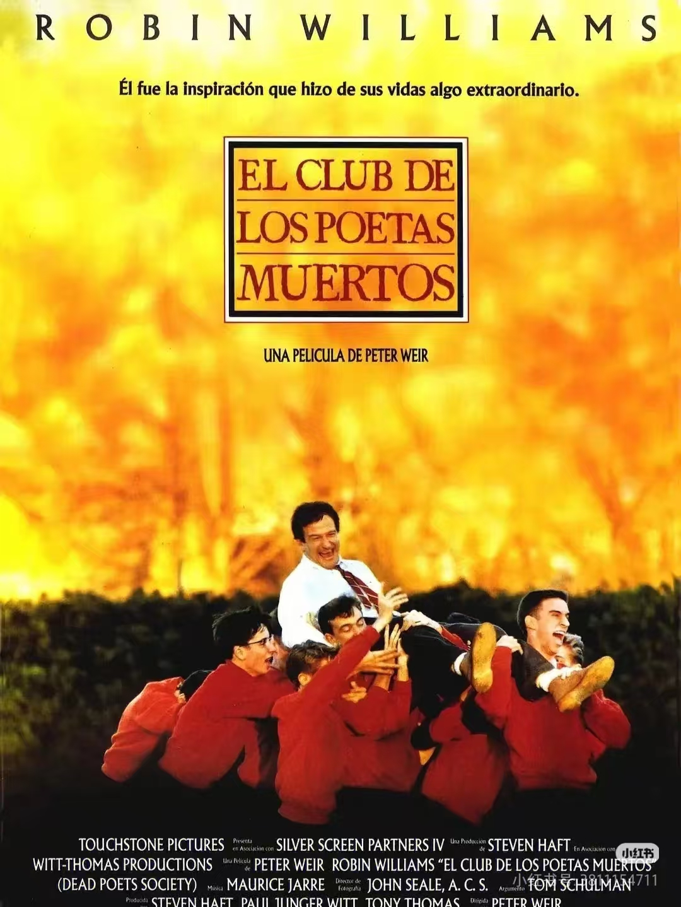
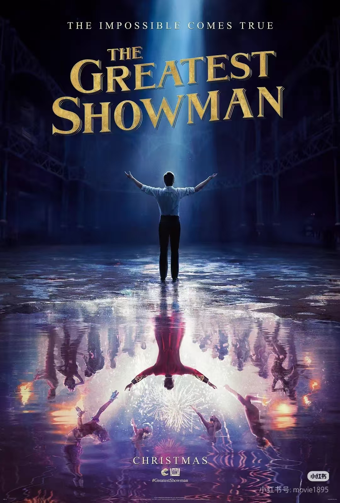

Nemo
我们都不是白色的
音乐偏好
喜欢的风格
我的乐评


电影清单

白日梦想家
“开拓视野，冲破艰险，看见世界，身临其境，贴近彼此，感受生活，这就是生活的目的。”

死亡诗社
“船长，我的船长！”—— 自由与诗意的觉醒，永远能打动渴望突破束缚的心。

心灵奇旅
不是所有灵魂都需要“伟大目标”，感受风吹过树叶、咬一口披萨的瞬间，就是生命的意义。

马戏之王
“平凡的人也能创造奇迹”，歌舞与故事的结合充满力量，每个“异类”都在闪耀自己的光。